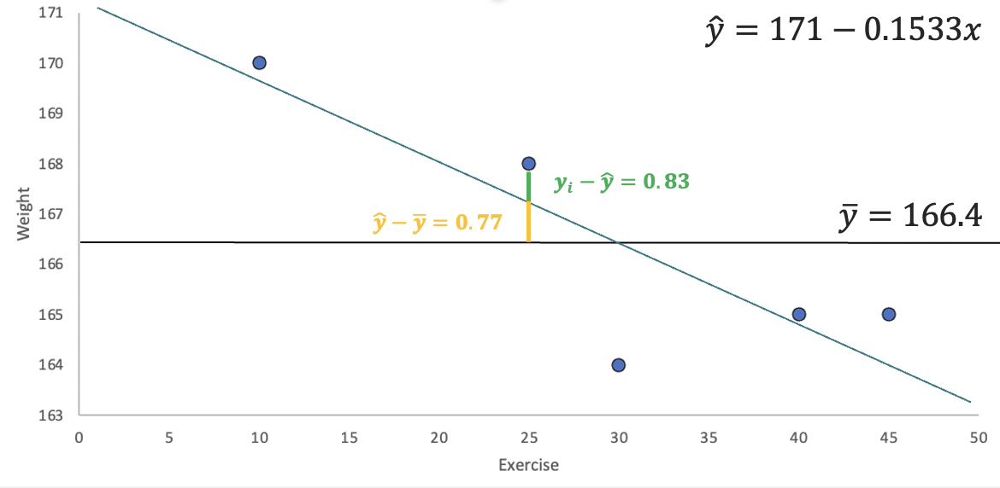

7 Regression II
Quantifying relationships between variables is an important skill in business analytics. The regression line, representing the best linear fit between two variables, enables businesses to make predictions, identify trends, and optimize strategies using data-driven insights. Understanding how to calculate and interpret a regression line provides the foundation for analyzing business relationships, such as the effect of advertising on sales or customer satisfaction on revenue. Below, we delve into generating and analyzing a regression line.
7.1 The Regression Line
The regression line is calculated to minimize the average distance (or errors) between the line and the observed data points. It is defined by two key components: a slope (\(\beta\)) and an intercept (\(\alpha\)). Mathematically, the regression line is expressed as: \[\hat{y_i}=\hat{\alpha}+\hat{\beta}x_i\]
where \(\hat{y_i}\) are the predicted values of \(y\) given the \(x\)’s. The slope determines the steepness of the line. The estimate quantifies how much a unit increase in \(x\) changes \(y\). We can easily calculate the slope by using the covariance between \(y\) and \(x\), and the variance of \(x\). Mathematically we have:
\[\hat{\beta}= \frac {s_{xy}}{s_{x}^2}\]
The intercept determines where the line crosses the \(y\) axis. In other words it returns the value of \(y\) when \(x\) is zero. Once we have the slope of the regression line we can estimate the intercept by: \[\hat{\alpha}=\bar{y}-\hat{\beta}\bar{x}\]
Example: Let’s examine a data set on Price and Advertisement. In general, one expects that when a company advertises, it can convince consumers to pay more for their product. Below is the data used to calculate the regression line, followed by its interpretation.
| Advertisement (x) | Price (y) |
|---|---|
| 2 | 7 |
| 1 | 3 |
| 3 | 8 |
| 4 | 10 |
The data shows a clear relationship between advertisement and price: when advertisement spending is high, price also tends to be high. This suggests a direct relationship between the two variables. In a previous chapter, we learned to quantify such relationships using covariance and the correlation coefficient.
In this section, we aim to answer two key questions:
- Effectiveness: How much can we increase the price for every additional dollar spent on advertisement?
- Prediction: What is the predicted price if we have a budget of 6 for advertisement?
The regression line allows us to answer these questions by quantifying the relationship between the two variables. Specifically, if we can estimate the regression line, as shown below, we can answer these questions.
Let’s start by calculating the slope of the regression line, as this will help us answer the effectiveness question. The slope measures how much the price increases for every additional dollar spent on advertisement. It is calculated using the formula: \(\hat{\beta}= \frac {s_{xy}}{s_{x}^2}\). Given that the covariance is \(3.67\) and the variance of \(x\) is \(1.67\), the slope of the regression line is \(\hat{\beta}= \frac{3.67}{1.67}=2.2\). This tells us that for every additional dollar spent on advertisement, price increases by \(2.2\) on average. Thus, we have answered the effectiveness question.
Next, we calculate the intercept to complete the regression line and answer the prediction question. The intercept represents the predicted price when advertisement spending is zero. It is calculated as: \(\hat{\alpha}=\bar{y}-\hat{\beta}\bar{x}\). Since the mean of advertisement is \(2.5\) and the mean of price is \(7\), the intercept is \(\hat{\alpha}=7-2.2(2.5)=1.5\). This means that if we do not advertise, the predicted price is zero.
The regression line can be completed by using the intercept and slope that we have estimated above. In particular, the regression line is \(\hat{y_i}=1.5+2.2x_i\). With this equation we can now establish that if we had a budget of \(6\) for advertisement, our predicted price would be \(\hat{y_i}=1.5+2.2(6)=14.7\). This answers our prediction question.
In conclusion regression line has allowed us to answer both questions: 1. The effectiveness of advertisement: For every dollar spent, the price increases by \(2.2\). 2. The predicted price: With an advertisement budget of \(6\), the predicted price is \(14.7\).
This demonstrates the value of regression analysis in quantifying relationships and making informed predictions.
7.2 Measures of Goodness of Fit
When analyzing the effectiveness of a regression model, it is crucial to assess how well the model fits the data. This is where measures of goodness of fit come into play. Below we revisit the coefficient of determination or \(R^2\).
Coefficient of Determination
The coefficient of determination or \(R^2\) is the percent of the variation in \(y\) that is explained by changes in \(x\). The higher the \(R^2\) the better the explanatory power of the model. The \(R^2\) is always between [0,1]. To calculate use \(R^2=SSR/SST\). Below you can find how to calculate each component of the \(R^2\).
\(SSR\) (Sum of Squares due to Regression) is the part of the variation in \(y\) explained by the model. Mathematically, \(SSR=\sum{(\hat{y_i}-\bar{y})^2}\).
\(SSE\) (Sum of Squares due to Error) is the part of the variation in \(y\) that is unexplained by the model. Mathematically, \(SSE=\sum{(y_i-\hat{y_i})^2}\).
\(SST\) (Sum of Squares Total) is the total variation of \(y\) with respect to the mean. Mathematically, \(SST=\sum{(y_i-\bar{y})^2}\).
Note that \(SST=SSR+SSE\).
Example: Let’s consider data on the Weight (\(y\)) and Exercise (\(x\)) of a particular person.
| Weight (y) | Exercise (x) |
|---|---|
| 165 | 45 |
| 170 | 10 |
| 168 | 25 |
| 164 | 30 |
| 165 | 40 |
Now, if we were to predict the weight of this person, we could consider just using the mean value (i.e., \(166.4\)). If this were our guess, then the mistakes (errors) we would have made with this prediction are quantified by the \(SST=25.2\). Below, you can see these mistakes visually.
For example, in day \(1\) the mean prediction is \(166.4\), but the actual measure is \(165\). We have made a mistake of \(-1.4\) by using the mean as our predicted weight. To get a sense of the overall mistake we have made, we add up all of the squared errors made by using the mean as a prediction. Hence, \(SST= (-1.4)^2 + (3.6)^2 + (1.6)^2 + (-2.4)^2 + (-1.4)^2= 25.2\).
The idea behind regression is that another variable related to weight can help us make a better prediction. Generally speaking, you burn calories if you exercise, so your weight should be lower when exercising. Hence, adding information on how many minutes a person exercises in a day should allow us to predict someone’s weight better. The \(SSE\) quantifies the mistakes made by a prediction generated from regression. To understand this, let’s start by looking at the regression line for Weight and Exercise.

The image highlights how the regression line can reduce the errors in our prediction. Consider the point with \(y\) coordinate \(168\). The error using the mean is \(1.6\) (the green and yellow lines). However, if we update our prediction using the regression line, the mistake is reduced to \(168-167.17=0.83\) (the green line). Squaring all these deviations from the line and adding them gives us \(SSE=0.81+0.29+0.69+5.76+0.02=7.57\). Note how using the regression line has helped us reduce the errors in our prediction.
If regression has helped us make smaller mistakes, it has also helped us explain more of the variation in Weight (\(y\)). In the graph, the gap between the mean and the \(168\) point has been reduced by the amount highlighted in yellow (\(0.77\)). If we square and add up all of the “improvements,” we get \(SSR=5.29+9.4+0.59+0+2.35=17.63\). In sum, the regression line has closed the gap of the prediction errors made by using the mean by \(R^2=\frac{SSR}{SST} \approx 0.7\) or 70%.
7.3 Multiple Regression
If we were to predict weight we could use several other variables that are related to get a better prediction. Multiple regression is a technique used predict a variable using more than one independent variable. Mathematically, you would be estimating \(\hat{y_i}=\hat{\beta_0}+\hat{\beta_1}x_1+\hat{\beta_2}x_2...+\hat{\beta_k}x_k\), where \(k\) is the total number of independent variables included in the regression model.
Example: Let’s consider an additional variable in our Weight and Exercise example. The table below includes information on Calories (z).
| Weight (y) | Exercise (x) | Calories (z) |
|---|---|---|
| 165 | 45 | 1200 |
| 170 | 10 | 1260 |
| 168 | 25 | 1220 |
| 164 | 30 | 1180 |
| 165 | 40 | 1190 |
The regression line can be estimated using computer software and is given by \(\hat{y_i}=83.96-0.025x+0.069z\). A few things can be concluded from the regression line. First, as the amount of exercise increases our weight tends to go down, but as we consume more calories the weight tends to go up. Second, the effectiveness of calories seems to be better that that of exercise. For every minute exercise our weight goes down on average by 0.025 pounds. However, if we reduce our calorie consumption by 1, then our weight goes down by 0.069 pounds.
Anova
We can further explore the importance of each variable using the Anova table. This table helps us understand how well our regression model explains the dependent variable. For now, we will use this table to show the \(SSR\) generated by each variable as well as to track the errors. Using computer software we get the following table:
| Source | Sum Squares |
|---|---|
| x | 17.63 |
| z | 6.55 |
| Residuals | 1.01 |
The table shows that x “closes the gap” with respect to the mean prediction by \(17.63\). If we add calories to our model, we further decrease the gap by another \(6.55\). In sum, using them together reduces the \(SST\) by \(24.18\), which in turn reduced the \(SSE\) to only \(1.01\). Finally, the \(R^2\) also increases from \(0.7\) to now \(0.96\), \(R^2= \frac{17.63+6.55}{25.5}\).
Adjusted \(R^2\)
The adjusted \(R^2\) recognizes that the \(R^2\) is a non-decreasing function of the number of independent variables included in the model. This metric penalizes a model with more explanatory variables relative to a simpler model. It is calculated by \(1-(1-R^2) \frac {n-1}{n-k-1}\), where \(k\) is the number of explanatory variables used in the model and \(n\) is the sample size. For our weight example \(adjusted R^2=1-(1-0.96) \frac{5-1}{5-2-1}=0.9196\).
Residual Standard Error
The Residual Standard Error estimates the average dispersion of the data points around the regression line. Recall, that we have calculated the squared deviation from the regression line by using \(SSE\). Hence if we want to find an average deviation we can divide using the number of observations and then find a square root to go back to linear values. In particular you can use \(s_e =\sqrt{\frac{SSE}{n-k-1}}\), where \(k\) is the number of independent variables used in your regression. For our example with only exercise in our model \(s_e=\sqrt{\frac{7.57}{5-1-1}}=1.59\). If we include both calories and exercise then \(s_e=\sqrt{\frac{1.01}{5-2-1}}=0.71\).
7.4 Regression in R
Below we conduct regression analysis in R, using the weight data. Let’s start by creating a tibble to store the data.
library(tidyverse)
library(ggthemes)
d<-tibble(y=c(165,170,168,164,165),
x=c(45,10,25,30,40),
z=c(1200,1260,1220,1180,1190))We can first visualize the relationship between x and y using ggplot.
d %>% ggplot() +
geom_point(aes(y=y,x=x),
pch=21, col="black", bg="blue", alpha=0.5) +
theme_clean() +
geom_smooth(aes(y=y,x=x),
method="lm",se=F,formula=y~x)The regression line is estimated using the lm() command as shown below:
fit<-lm(y~x, data=d)We can retrieve the coefficients by either using the coef() function or the summary() function.
summary(fit)
Call:
lm(formula = y ~ x, data = d)
Residuals:
1 2 3 4 5
0.9000 0.5333 0.8333 -2.4000 0.1333
Coefficients:
Estimate Std. Error t value Pr(>|t|)
(Intercept) 171.00000 1.87913 91.000 2.93e-06 ***
x -0.15333 0.05799 -2.644 0.0774 .
---
Signif. codes: 0 '***' 0.001 '**' 0.01 '*' 0.05 '.' 0.1 ' ' 1
Residual standard error: 1.588 on 3 degrees of freedom
Multiple R-squared: 0.6997, Adjusted R-squared: 0.5996
F-statistic: 6.991 on 1 and 3 DF, p-value: 0.07738The summary function confirms our results for the \(R^2\) and coefficients. If we wanted to make a prediction we can use the predict() function with the fit object as input. Below we predict y when x is equal to 4.
predict(fit,newdata = tibble(x=c(4))) 1
170.3867 Note that the values of \(x\) must be entered as a tibble in the function. We can run multiple regression by just adding z to our fit object.
fit<-lm(y~x+z, data=d)
summary(fit)
Call:
lm(formula = y ~ x + z, data = d)
Residuals:
1 2 3 4 5
-0.3375 -0.3375 0.7875 -0.3375 0.2250
Coefficients:
Estimate Std. Error t value Pr(>|t|)
(Intercept) 83.96250 24.20433 3.469 0.0740 .
x -0.02500 0.04413 -0.567 0.6281
z 0.06875 0.01911 3.598 0.0693 .
---
Signif. codes: 0 '***' 0.001 '**' 0.01 '*' 0.05 '.' 0.1 ' ' 1
Residual standard error: 0.7115 on 2 degrees of freedom
Multiple R-squared: 0.9598, Adjusted R-squared: 0.9196
F-statistic: 23.89 on 2 and 2 DF, p-value: 0.04018Lastly, to obtain the Anova table we can use the anova() command.
anova(fit)Analysis of Variance Table
Response: y
Df Sum Sq Mean Sq F value Pr(>F)
x 1 17.6333 17.6333 34.831 0.02753 *
z 1 6.5542 6.5542 12.947 0.06931 .
Residuals 2 1.0125 0.5062
---
Signif. codes: 0 '***' 0.001 '**' 0.01 '*' 0.05 '.' 0.1 ' ' 1Below we summarize the R functions: - The lm() function to estimates the linear regression model.
The
predict()function uses the linear model object to predict values. New data is entered as a data frame or tibble.The
coef()function returns the model’s coefficients.The
summary()function returns the model’s coefficients, and goodness of fit measures.The
Anova()function creates the anova table for a regression. you must provide an object that contains the result of thelm()function.
7.5 Exercises
The following exercises will help you get practice on Regression Line estimation and interpretation. In particular, the exercises work on:
Estimating the slope and intercept.
Calculating measures of goodness of fit.
Prediction using the regression line.
Answers are provided below. Try not to peak until you have a formulated your own answer and double checked your work for any mistakes.
Exercise 1
For the following exercises, make your calculations by hand and verify results using R functions when possible.
- Consider the data below. Calculate the deviations from the mean for each variable and use the results to estimate the regression line. Use R to verify your result. On average by how much does y increase per unit increase of x?
| x | 20 | 21 | 15 | 18 | 25 |
|---|---|---|---|---|---|
| y | 17 | 19 | 12 | 13 | 22 |
Answer
The regression lines is \(\hat{y}=-4.93+1.09x\). For each unit increase in x, y increases on average \(1.09\).
Start by generating the deviations from the mean for each variable. For x the deviations are:
x<-c(20,21,15,18,25)
(devx<-x-mean(x))[1] 0.2 1.2 -4.8 -1.8 5.2Next, find the deviations for y:
y<-c(17,19,12,13,22)
(devy<-y-mean(y))[1] 0.4 2.4 -4.6 -3.6 5.4For the slope we need to find the deviation squared of the x’s. This can easily be done in R:
(devx2<-devx^2)[1] 0.04 1.44 23.04 3.24 27.04The slope is calculated by \(\frac{\sum_{i=i}^{n} (x_{i}-\bar{x})(y_{i}-\bar{y})}{\sum_{i=i}^{n} (x_{i}-\bar{x})^2}\). In R we can just find the ratio between the summations of (devx)(devy) and devx2.
(slope<-sum(devx*devy)/sum(devx2))[1] 1.087591The intercept is given by \(\bar{y}-\beta(\bar{x})\). In R we find that the intercept is equal to:
(intercept<-mean(y)-slope*mean(x))[1] -4.934307Our results can be easily verified by using the lm() and coef() functions in R.
fitEx1<-lm(y~x)
coef(fitEx1)(Intercept) x
-4.934307 1.087591 - Calculate SST, SSR, and SSE. Confirm your results in R. What is the \(R^2\)? What is the Standard Error estimate? Is the regression line a good fit for the data?
Answer
SST is \(69.2\), SSR is \(64.82\) and SSE is \(4.38\) (note that \(SSR+SSE=SST\)). The \(R^2\) is just \(\frac{SSR}{SST}=0.94\) and the Standard Error estimate is \(1.21\). They both indicate a great fit of the regression line to the data.
Let’s start by calculating the SST. This is just \(\sum{(y_{i}-\bar{y})^2}\).
(SST<-sum((y-mean(y))^2))[1] 69.2Next, we can calculate SSR. This is calculated by the following formula \(\sum{(\hat{y_{i}}-\bar{y})^2}\). To obtain the predicted values in R, we can use the output of the lm() function. Recall our fitEx1 object created in Exercise 1. It has fitted.values included:
(SSR<-sum((fitEx1$fitted.values-mean(y))^2))[1] 64.82044The ratio of SSR to SST is the \(R^2\):
(R2<-SSR/SST)[1] 0.9367115Finally, let’s calculate SSE \(\sum{(y_{i}-\hat{y_{i}})^2}\):
(SSE<-sum((y-fitEx1$fitted.values)^2))[1] 4.379562With the SSE we can calculate the Standard Error estimate:
sqrt(SSE/3)[1] 1.208244We can confirm these results using the summary() function.
summary(fitEx1)
Call:
lm(formula = y ~ x)
Residuals:
1 2 3 4 5
0.1825 1.0949 0.6204 -1.6423 -0.2555
Coefficients:
Estimate Std. Error t value Pr(>|t|)
(Intercept) -4.9343 3.2766 -1.506 0.22916
x 1.0876 0.1632 6.663 0.00689 **
---
Signif. codes: 0 '***' 0.001 '**' 0.01 '*' 0.05 '.' 0.1 ' ' 1
Residual standard error: 1.208 on 3 degrees of freedom
Multiple R-squared: 0.9367, Adjusted R-squared: 0.9156
F-statistic: 44.4 on 1 and 3 DF, p-value: 0.00689- Assume that x is observed to be 32, what is your prediction of y? How confident are you in this prediction?
Answer
If \(x=32\) then \(\hat{y}=29.87\). The regression is a good fit, so we can feel good about our prediction. However, we would be concerned about the sample size of the data.
In R we can obtain a prediction by using the predict() function. This function requires a data frame as an input for new data.
predict(fitEx1, newdata = data.frame(x=c(32))) 1
29.86861 Exercise 2
You will need the Education data set to answer this question. You can find the data set at https://jagelves.github.io/Data/Education.csv . The data shows the years of education (Education), and annual salary in thousands (Salary) for a sample of \(100\) people.
- Estimate the regression line using R. By how much does an extra year of education increase the annual salary on average? What is the salary of someone without any education?
Answer
An extra year of education increases the annual salary about \(5,300\) dollars (slope). A person that has no education would be expected to earn \(17,2582\) dollars (intercept).
Start by loading the data in R:
library(tidyverse)
Education<-read_csv("https://jagelves.github.io/Data/Education.csv")Next, let’s use the lm() function to estimate the regression line and obtain the coefficients:
fitEducation<-lm(Salary~Education, data = Education)
coefficients(fitEducation)(Intercept) Education
17.258190 5.301149 - Confirm that the regression line is a good fit for the data. What is the estimated salary of a person with \(16\) years of education?
Answer
The \(R^2\) is \(0.668\) and the standard error is \(21\). The line is a moderately good fit. If someone has \(16\) years of experience, the regression line would predict a salary of \(102,000\) dollars.
Let’s get the \(R^2\) and the Standard Error estimate by using the summary() function and fitEx1 object.
summary(fitEducation)
Call:
lm(formula = Salary ~ Education, data = Education)
Residuals:
Min 1Q Median 3Q Max
-62.177 -9.548 1.988 15.330 45.444
Coefficients:
Estimate Std. Error t value Pr(>|t|)
(Intercept) 17.2582 4.0768 4.233 5.2e-05 ***
Education 5.3011 0.3751 14.134 < 2e-16 ***
---
Signif. codes: 0 '***' 0.001 '**' 0.01 '*' 0.05 '.' 0.1 ' ' 1
Residual standard error: 20.98 on 98 degrees of freedom
Multiple R-squared: 0.6709, Adjusted R-squared: 0.6675
F-statistic: 199.8 on 1 and 98 DF, p-value: < 2.2e-16Lastly, let’s use the regression line to predict the salary for someone who has \(16\) years of education.
predict(fitEducation, newdata = data.frame(Education=c(16))) 1
102.0766 Exercise 3
You will need the FoodSpend data set to answer this question. You can find this data set at https://jagelves.github.io/Data/FoodSpend.csv .
- Omit any NA’s that the data has. Create a dummy variable that is equal to \(1\) if an individual owns a home and \(0\) if the individual doesn’t. Find the mean of your dummy variable. What proportion of the sample owns a home?
Answer
Approximately, \(36\)% of the sample owns a home.
Start by loading the data into R and removing all NA’s:
Spend<-read_csv("https://jagelves.github.io/Data/FoodSpend.csv")Rows: 80 Columns: 2
── Column specification ────────────────────────────────────────────────────────
Delimiter: ","
chr (1): OwnHome
dbl (1): Food
ℹ Use `spec()` to retrieve the full column specification for this data.
ℹ Specify the column types or set `show_col_types = FALSE` to quiet this message.Spend<-na.omit(Spend)To create a dummy variable for OwnHome we can use the ifelse() function:
Spend$dummyOH<-ifelse(Spend$OwnHome=="Yes",1,0)The average of the dummy variable is given by:
mean(Spend$dummyOH)[1] 0.3625- Run a regression with Food being the dependent variable and your dummy variable as the independent variable. What is the interpretation of the intercept and slope?
Answer
The intercept is the average food expenditure of individuals without homes (\(6417\)). The slope, is the difference in food expenditures between individuals that do have homes minus those who don’t. We then conclude that individuals that do have a home spend about \(-2516\) less on food than those who don’t have homes.
To run the regression use the lm() function:
lm(Food~dummyOH,data=Spend)
Call:
lm(formula = Food ~ dummyOH, data = Spend)
Coefficients:
(Intercept) dummyOH
6473 -3418 - Now run a regression with Food being the independent variable and your dummy variable as the dependent variable. What is the interpretation of the intercept and slope? Hint: you might want to plot the scatter diagram and the regression line.
Answer
The scatter plot shows that most of the points for home owners are below \(6000\). For non-home owners they are mainly above \(6000\). The line can be used to predict the likelihood of owning a home given someones food expenditure. The intercept is above one, but still it gives us the indication that it is likely that low food expenditures are highly predictive of owning a home. The slope tells us how that likelihood changes as the food expenditures increase by 1. In general, the likelihood of owning a home decreases as the food expenditure increases.
Run the lm() function once again:
fitFood<-lm(dummyOH~Food,data=Spend)
coefficients(fitFood) (Intercept) Food
1.4320766616 -0.0002043632 For the scatter plot use the following code:
library(ggthemes)
Spend %>% ggplot() +
geom_point(aes(y=dummyOH,x=Food),
col="black", pch=21, bg="grey") +
geom_smooth(aes(y=dummyOH,x=Food), method="lm",
formula=y~x, se=F) +
theme_clean()Exercise 4
You will need the Population data set to answer this question. You can find this data set at https://jagelves.github.io/Data/Population.csv .
- Run a regression of Population on Year. How well does the regression line fit the data?
Answer
If we follow the \(R^2=0.81\) the model fits the data very well.
Let’s load the data from the web:
Population<-read_csv("https://jagelves.github.io/Data/Population.csv")New names:
Rows: 16492 Columns: 4
── Column specification
──────────────────────────────────────────────────────── Delimiter: "," chr
(1): Country.Name dbl (3): ...1, Year, Population
ℹ Use `spec()` to retrieve the full column specification for this data. ℹ
Specify the column types or set `show_col_types = FALSE` to quiet this message.
• `` -> `...1`Now let’s filter the data so that we can focus on the population for Japan.
Japan<-filter(Population,Country.Name=="Japan")Next, we can run the regression of Population against the Year. Let’s also run the summary() function to obtain the fit and the coefficients.
fit<-lm(Population~Year,data=Japan)
summary(fit)
Call:
lm(formula = Population ~ Year, data = Japan)
Residuals:
Min 1Q Median 3Q Max
-9583497 -4625571 1214644 4376784 5706004
Coefficients:
Estimate Std. Error t value Pr(>|t|)
(Intercept) -988297581 68811582 -14.36 <2e-16 ***
Year 555944 34569 16.08 <2e-16 ***
---
Signif. codes: 0 '***' 0.001 '**' 0.01 '*' 0.05 '.' 0.1 ' ' 1
Residual standard error: 4871000 on 60 degrees of freedom
Multiple R-squared: 0.8117, Adjusted R-squared: 0.8086
F-statistic: 258.6 on 1 and 60 DF, p-value: < 2.2e-16- Create a prediction for Japan’s population in 2030. What is your prediction?
Answer
The prediction for \(2030\) is about \(140\) million people.
Let’s use the predict() function:
predict(fit,newdata=data.frame(Year=c(2030))) 1
140268585 - Create a scatter diagram and include the regression line. How confident are you of your prediction after looking at the diagram?
Answer
After looking at the scatter plot, it seems unlikely that the population in Japan will hit \(140\) million. Population has been decreasing in Japan!
Use the plot() and abline() functions to create the figure.
Japan %>% ggplot() +
geom_point(aes(y=Population,x=Year),
col="black", pch=21, bg="grey") +
geom_smooth(aes(y=Population,x=Year),
formula=y~x, method="lm", se=F) +
theme_clean()